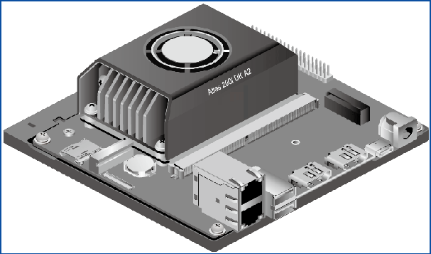
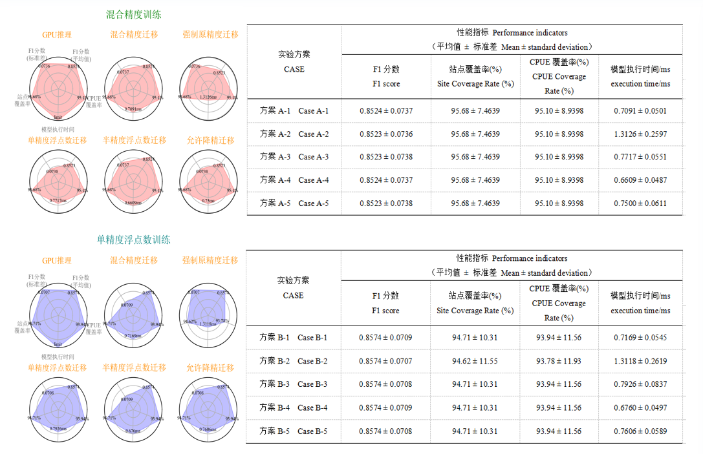
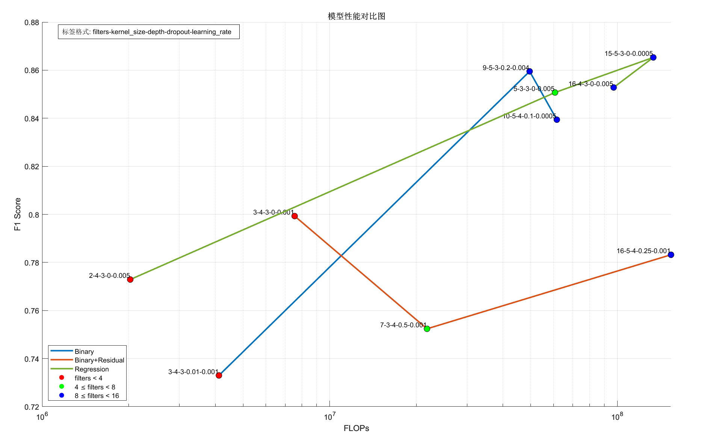

产学研一体化的软硬件融合：将人工智能渔情预报技术与实际渔业生产管理结合，通过软件（大数据模型）与硬件（边缘计算设备）的一体化设计，突破传统依赖科研单位服务器的局限。
国产ai芯片替代：利用国产自主芯片开发边缘端处理能力，直接在渔船上实现大数据模型运算，解决了渔船无法实时处理复杂数据的痛点，推动预报技术从实验室走向产业应用。减少对进口硬件平台的依赖，规避国际政治经济风险，保障远洋渔业技术链的安全可控。
将科研预报系统与实际渔业产业相互融合，软件与硬件结合一体化，推动了人工智能渔情预报技术的发展 尽管利用新兴的人工智能技术已在大洋性经济鱿鱼类渔场预报中进行了应用，取得较好的具有前景的科研研究成果，但在渔业生产与管理中的渔情预报系统未得到更新。由于渔船上缺乏边缘端处理大数据模型的能力，使得渔情预报系统的实现依赖于依托科研单位中的服务器计算，无法做到产学研一体化。国产自主芯片的开发有效地成为软件与硬件相结合的桥梁，通过预报边缘端的实现来加速现代渔情预报技术智能化发展。
华为昇腾Atlas200IDKA2开发者套
构建量化评估体系 ：系统性地量化五类迁移方式及多因子组合下的模型多维度性能指标，构建起迁移效能的量化评估体系，为迁移学习策略优化供应标准化参考，这是在迁移学习评估方法上的一种创新。
提出动态选择机制 ：基于网络架构特性，提出迁移方式动态选择机制，针对轻量化和复杂化架构分别采用不同精度的迁移方法，在迁移策略选择方面具有创新性。
揭示内在关联 ：经由量化分析，揭示迁移方式、网络复杂度、参数量与模型精度之间的内在关联，为迁移学习在资源受限环境下的效率与精度平衡提供理论和实践指导，从理论研究角度展现了创新性。
通过国产硬件平台上的迁移学习，实现国产芯片替代化，推广远洋渔业特定场景AI大模型 随着国际政治经济环境的变化，依赖进口硬件平台存在不确定性风险。发展国产硬件平台是实现信息技术自主可控的关键一步，对于国际履约和远洋渔业发展具有重要的战略意义。在大数据背景下，提取特定场景的机制规律能更有针对性地利用大模型资源。国产硬件平台上迁移学习的实现可以为国产芯片替代化提供关键技术支持，并为推广大洋性其他经济物种的渔情预报平台开发提供示例。量化效能关系，指导迁移策略选择，实现精度与效率的平衡优化 本研究系统性地量化了五类迁移方式下模型的多维度性能指标（如精度、效率等），构建了迁移效能的量化评估体系，为迁移学习策略的优化提供了标准化参考。提出基于网络架构特性的迁移方式动态选择机制：轻量化架构：当新网络参数简化、参数量减少时，优先采用半精度浮点数迁移，以最小化精度损失的基础上提高计算效率；复杂化架构：若新网络架构复杂度提升、参数量增加，则采用强制原精度迁移或单精度浮点数迁移，通过保持算子精度确保迁移后性能稳定。通过量化分析揭示了迁移方式、网络复杂度、参数量与模型精度之间的内在关联，为迁移学习在资源受限环境下的效率与精度平衡提供了理论依据与实践指导。
“精度-效率”双优的轻量化模型生成： 利用遗传算法对深度学习模型的网络拓扑结构进行动态编码，将网络配置转化为可变长度染色体，突破传统固定结构的限制。
渔业场景适配性增强：针对渔场预报的多源数据特性，设计基于领域知识的约束条件，引导算法优先生成具有时空特征捕获能力的轻量化模块，提升模型对渔业数据的本质规律拟合能力。
边缘硬件原生适配：结合国产边缘芯片（如华为昇腾NPU）的指令集特性，在架构搜索阶段引入硬件感知惩罚项（如芯片内存带宽限制），确保生成的网络结构可直接部署于渔船终端，推理速度提升3-5倍，满足实时预报需求。
轻量化模型快速迁移：基于NAS遗传算法生成的元架构，通过少量样本微调即可适配其他大洋性鱼种，模型迁移开发成本降低70%，解决渔业多资源管理中模型重复开发问题。
动态环境自适应迭代：设计在线增量学习机制，利用渔船终端回传的新增渔获数据，触发遗传算法的局部架构优化，使模型持续适应气候变化导致的渔场分布规律漂移，延长系统有效生命周期。
